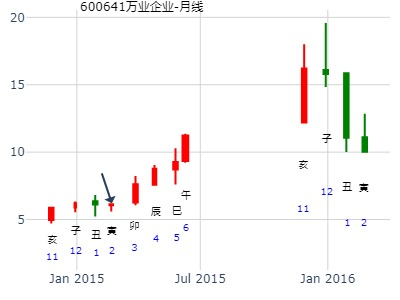
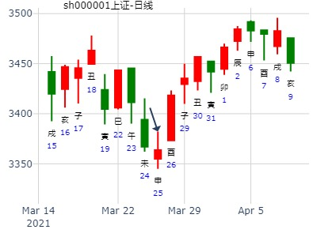
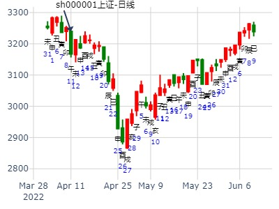

600877中国嘉陵短线到下周末。天雷无妄。（风生水起）
时间: 2017-01-05
干支: 丙申年辛丑月壬辰日 (旬空: 午未 )
无妄静卦
白虎 ▅▅▅▅▅ 妻财戌土
腾蛇 ▅▅▅▅▅ 官鬼申金
勾陈 ▅▅▅▅▅ 子孙午火 世
朱雀 ▅▅ ▅▅ 妻财辰土
青龙 ▅▅ ▅▅ 兄弟寅木
玄武 ▅▅▅▅▅ 父母子水 应
1-6月份A股走势？ 天雷无妄静卦。.md
2020年1月11日0时17分 (在线摇卦) 晖
干支：己亥年 丁丑月 癸丑日 壬子时 （日空：寅卯）
神煞：驿马－亥 桃花－午 日禄－子 贵人－卯，巳
巽宫：天雷无妄 (六冲) 巽宫：天雷无妄 (六冲)
六神 伏神 本 卦 变 卦
白虎 妻财壬戌土 ▅▅▅▅▅ 妻财壬戌土 ▅▅▅▅▅
腾蛇 官鬼壬申金 ▅▅▅▅▅ 官鬼壬申金 ▅▅▅▅▅
勾陈 子孙壬午火 ▅▅▅▅▅ 世 子孙壬午火 ▅▅▅▅▅ 世
朱雀 妻财庚辰土 ▅▅ ▅▅ 妻财庚辰土 ▅▅ ▅▅
青龙 兄弟庚寅木 ▅▅ ▅▅ 兄弟庚寅木 ▅▅ ▅▅
玄武 父母庚子水 ▅▅▅▅▅ 应 父母庚子水 ▅▅▅▅▅ 应
下周13-17股票财运？15日股票财运 手摇卦--张三汉
公历时间：2020年1月15日7时4分
干 支：己亥年 丁丑月 丁巳日 甲辰时
旬 空：辰巳 申酉 子丑 寅卯
神 煞：驿马─亥 桃花─午 日禄─午 贵人─酉，亥
巽宫：天雷无妄（六冲）
六神 【本 卦】
青龙 ▄▄▄▄▄ 妻财壬戌土
玄武 ▄▄▄▄▄ 官鬼壬申金
白虎 ▄▄▄▄▄ 子孙壬午火 世
螣蛇 ▄▄ ▄▄ 妻财庚辰土
勾陈 ▄▄ ▄▄ 兄弟庚寅木
朱雀 ▄▄▄▄▄ 父母庚子水 应
测512480国联安中证半导体ETF基金在2020年走势--ytang
公历起卦时间：2020年1月29日15时34分 (手工指定)
干支：己亥年 丁丑月 辛未日 丙申时 （日空：戌亥）
神煞：驿马－巳 桃花－子 日禄－酉 贵人－寅，午
巽宫：天雷无妄 (六冲)
六神 伏神 本 卦
腾蛇 妻财壬戌土 ▅▅▅▅▅
勾陈 官鬼壬申金 ▅▅▅▅▅
朱雀 子孙壬午火 ▅▅▅▅▅ 世
青龙 妻财庚辰土 ▅▅ ▅▅
玄武 兄弟庚寅木 ▅▅ ▅▅
白虎 父母庚子水 ▅▅▅▅▅ 应
半导体ETF123月走势，512480， 无妄静卦。风生水起
无妄静卦,风生水起问512480半导体etf未来几个月
时间: 2023-01-17
干支: 壬寅年癸丑月乙亥日 (旬空: 申酉 )
无妄静卦
玄武 ▅▅▅▅▅ 妻财戌土
白虎 ▅▅▅▅▅ 官鬼申金
腾蛇 ▅▅▅▅▅ 子孙午火 世
勾陈 ▅▅ ▅▅ 妻财辰土
朱雀 ▅▅ ▅▅ 兄弟寅木
青龙 ▅▅▅▅▅ 父母子水 应
测股梦虽破 仍在测
手摇：上海股市在明天的行情走势如何
壬寅 癸丑 丁丑 丁未 (申酉空) 壬寅年±月廿九
(2023/01/19 13:19:42)
天雷无妄
青龙 妻财戌土 ／
玄武 官鬼壬申 ／
白虎 子孙午火 ／ 世
腾蛇 妻财辰土 ∥
勾陈 兄弟寅木 ∥
朱雀 父母子水 ／ 应
测000603盛达矿业在2013年走势
出生：1979 年 性别：男 占事：测000603盛达矿业在2013年走势
公历起卦时间：2013年2月11日11时49分 (手工指定)
干支：癸巳年 甲寅月 戊申日 戊午时 （日空：寅卯）
巽宫：天雷无妄 (六冲)
六神 伏神 本 卦 变 卦
朱雀 妻财壬戌土 ▅▅▅▅▅ 妻财壬戌土 ▅▅▅▅▅
青龙 官鬼壬申金 ▅▅▅▅▅ 官鬼壬申金 ▅▅▅▅▅
玄武 子孙壬午火 ▅▅▅▅▅ 世 子孙壬午火 ▅▅▅▅▅ 世
白虎 妻财庚辰土 ▅▅ ▅▅ 妻财庚辰土 ▅▅ ▅▅
腾蛇 兄弟庚寅木 ▅▅ ▅▅ 兄弟庚寅木 ▅▅ ▅▅
勾陈 父母庚子水 ▅▅▅▅▅ 应 父母庚子水 ▅▅▅▅▅ 应
600641-2015-02-18无妄静卦
个股年卦：无妄静卦，600641万业企业在2015年走势
时间: 2015-02-18
干支: 乙未年戊寅月乙丑日 (旬空: 戌亥 )
无妄静卦
玄武 ▅▅▅▅▅ 妻财戌土
白虎 ▅▅▅▅▅ 官鬼申金
腾蛇 ▅▅▅▅▅ 子孙午火 世
勾陈 ▅▅ ▅▅ 妻财辰土
朱雀 ▅▅ ▅▅ 兄弟寅木
青龙 ▅▅▅▅▅ 父母子水 应

2019上证指数从皇极经世卦看亥子丑月趋势
求测人：某人，男，庚申(1980年)，其它方式(起卦方式
占问事宜：2019上证指数皇极经世卦
公历：2019年2月4日12时36分，星期一。
神煞：驿马-寅 桃花-酉 干禄-亥 贵人-卯、巳
干支：己亥年 丙寅月 壬申日 丙午时 (卦身：卯)
主变卦 天雷无妄(巽宫) [空亡:戌、亥]
白虎 ▅▅▅▅▅ 妻财壬戌土
螣蛇 ▅▅▅▅▅ 官鬼壬申金
勾陈 ▅▅▅▅▅ 子孙壬午火 世
朱雀 ▅▅ ▅▅ 妻财庚辰土
青龙 ▅▅ ▅▅ 兄弟庚寅木
玄武 ▅▅▅▅▅ 父母庚子水 应
上证3.2-6走势
出生：2020 年 性别：男 占事：上证3.2-6
排卦：元亨利贞网六爻在线排盘系统 http://www.china95.net
公历起卦时间：2020年2月29日22时24分 (在线摇卦)
干支：庚子年 戊寅月 壬寅日 辛亥时 （日空：辰巳）
巽宫：天雷无妄 (六冲) 巽宫：天雷无妄 (六冲)
六神 伏神 本 卦 变 卦
白虎 妻财壬戌土 ▅▅▅▅▅ 妻财壬戌土 ▅▅▅▅▅
螣蛇 官鬼壬申金 ▅▅▅▅▅ 官鬼壬申金 ▅▅▅▅▅
勾陈 子孙壬午火 ▅▅▅▅▅ 世 子孙壬午火 ▅▅▅▅▅ 世
朱雀 妻财庚辰土 ▅▅ ▅▅ 妻财庚辰土 ▅▅ ▅▅
青龙 兄弟庚寅木 ▅▅ ▅▅ 兄弟庚寅木 ▅▅ ▅▅
玄武 父母庚子水 ▅▅▅▅▅ 应 父母庚子水 ▅▅▅▅▅ 应
试测上证2021.2.18四丁酉-2.26五乙巳哪日底？
2021.2.18四丁酉-2.26五乙巳哪日底？？
排卦：元亨利贞网六爻在线排盘系统
公历起卦时间：2021年2月6日14时39分 (电脑自动)
干支：辛丑年 庚寅月 乙酉日 癸未时 （日空：午未）
巽宫：天雷无妄 (六冲) 巽宫：天雷无妄 (六冲)
六神 伏神 本 卦 变 卦
玄武 妻财壬戌土 ▅▅▅▅▅ 妻财壬戌土 ▅▅▅▅▅
白虎 官鬼壬申金 ▅▅▅▅▅ 官鬼壬申金 ▅▅▅▅▅
螣蛇 子孙壬午火 ▅▅▅▅▅ 世 子孙壬午火 ▅▅▅▅▅ 世
勾陈 妻财庚辰土 ▅▅ ▅▅ 妻财庚辰土 ▅▅ ▅▅
朱雀 兄弟庚寅木 ▅▅ ▅▅ 兄弟庚寅木 ▅▅ ▅▅
青龙 父母庚子水 ▅▅▅▅▅ 应 父母庚子水 ▅▅▅▅▅ 应
占事：无妄静卦,半导体ETF2024年卦--风生水起
时间: 2024-02-24
干支: 甲辰年丙寅月戊午日 (旬空: 子丑 )
无妄静卦
朱雀 ▅▅▅▅▅ 妻财戌土
青龙 ▅▅▅▅▅ 官鬼申金
玄武 ▅▅▅▅▅ 子孙午火 世
白虎 ▅▅ ▅▅ 妻财辰土
腾蛇 ▅▅ ▅▅ 兄弟寅木
勾陈 ▅▅▅▅▅ 父母子水 应
3月5-9日大盘涨跌卦
占事：3月5-9日大盘涨跌？
公历起卦时间：2012年3月2日16时24分 (手工指定)
干支：壬辰年 壬寅月 壬戌日 戊申时 （日空：子丑）
神煞：驿马－申 桃花－卯 日禄－亥 贵人－卯，巳
巽宫：天雷无妄 (六冲) 巽宫：天雷无妄 (六冲)
六神 伏神 本 卦 变 卦
白虎 妻财壬戌土 ▅▅▅▅▅ 妻财壬戌土 ▅▅▅▅▅
腾蛇 官鬼壬申金 ▅▅▅▅▅ 官鬼壬申金 ▅▅▅▅▅
勾陈 子孙壬午火 ▅▅▅▅▅ 世 子孙壬午火 ▅▅▅▅▅ 世
朱雀 妻财庚辰土 ▅▅ ▅▅ 妻财庚辰土 ▅▅ ▅▅
青龙 兄弟庚寅木 ▅▅ ▅▅ 兄弟庚寅木 ▅▅ ▅▅
玄武 父母庚子水 ▅▅▅▅▅ 应 父母庚子水 ▅▅▅▅▅ 应
出生：没填 年 性别：男 占事：上证指数短期头部在何日
排卦：元亨利贞网六爻在线排盘系统 http://www.china95.net
公历起卦时间：2016年3月31日1时54分 (在线摇卦)
干支：丙申年 辛卯月 壬子日 辛丑时 （日空：寅卯）
巽宫：天雷无妄 (六冲)
六神 伏神 本 卦
白虎 妻财壬戌土 ▅▅▅▅▅
腾蛇 官鬼壬申金 ▅▅▅▅▅
勾陈 子孙壬午火 ▅▅▅▅▅ 世
朱雀 妻财庚辰土 ▅▅ ▅▅
青龙 兄弟庚寅木 ▅▅ ▅▅
玄武 父母庚子水 ▅▅▅▅▅ 应
上证指数 后市短线波段 头部在4月6日？
试预测一下股市，看能否预测得对。很怪，怎自动出这个卦？
我当六个爻通通不动。子日冲世上的午火，当唯有午爻动，故判断我所问的答案是午日出列来应，因此估计短期头部在下周三4月6日（午日午时）构成，大概划波段线如下。
备注：出列是指某个士兵从队列中向前走出几步并立定，我问的问题是上证指数短期头部在何日？现在午出列来应答向我报告，不知道灵不灵？
3.26上证收盘走势？
排卦：中国周易研究会网六爻在线排盘系统
公历起卦时间：2021年3月25日15时34分 (电脑自动)
干支：辛丑年 辛卯月 壬申日 戊申时 （日空：戌亥）
神煞：驿马－寅 桃花－酉 日禄－亥 贵人－卯，巳
巽宫：天雷无妄 (六冲) 巽宫：天雷无妄 (六冲)
六神 伏神 本 卦 变 卦
白虎 妻财壬戌土 ▅▅▅▅▅ 妻财壬戌土 ▅▅▅▅▅
螣蛇 官鬼壬申金 ▅▅▅▅▅ 官鬼壬申金 ▅▅▅▅▅
勾陈 子孙壬午火 ▅▅▅▅▅ 世 子孙壬午火 ▅▅▅▅▅ 世muqn?
朱雀 妻财庚辰土 ▅▅ ▅▅ 妻财庚辰土 ▅▅ ▅▅
青龙 兄弟庚寅木 ▅▅ ▅▅ 兄弟庚寅木 ▅▅ ▅▅
玄武 父母庚子水 ▅▅▅▅▅ 应 父母庚子水 ▅▅▅▅▅ 应

3.26上证收盘走势？
公历起卦时间：2021年3月25日15时37分 (电脑自动)
干支：辛丑年 辛卯月 壬申日 戊申时 （日空：戌亥）
巽宫：天雷无妄 (六冲)
六神 伏神 本 卦
白虎 妻财壬戌土 ▅▅▅▅▅
螣蛇 官鬼壬申金 ▅▅▅▅▅
勾陈 子孙壬午火 ▅▅▅▅▅ 世
朱雀 妻财庚辰土 ▅▅ ▅▅
青龙 兄弟庚寅木 ▅▅ ▅▅
玄武 父母庚子水 ▅▅▅▅▅ 应

起卦hour:2015年4月17日8时44分
时间: 2015-04-17
干支: 乙未年庚辰月癸亥日 (旬空: 子丑 )
无妄静卦
白虎 ▅▅▅▅▅ 妻财戌土
腾蛇 ▅▅▅▅▅ 官鬼申金
勾陈 ▅▅▅▅▅ 子孙午火 世
朱雀 ▅▅ ▅▅ 妻财辰土
青龙 ▅▅ ▅▅ 兄弟寅木
玄武 ▅▅▅▅▅ 父母子水 应
投资如何？
今年是关键的一年，准备抓住机会，把自己的全部存款投资期货，股票，是否有机会？能有多大的收益？麻烦老师们帮忙看看！谢谢
求测人：王先生，男，丁卯(1987年)，电脑摇卦(起卦方式)
占问事宜：投资如何？
公历：2016年4月10日17时27分，星期日。
干支：丙申年 壬辰月 壬戌日 己酉时 (卦身：卯)
主变卦 天雷无妄(巽宫) [空亡:子、丑]
白虎 ▅▅▅▅▅ 妻财壬戌土
螣蛇 ▅▅▅▅▅ 官鬼壬申金
勾陈 ▅▅▅▅▅ 子孙壬午火 世
朱雀 ▅▅ ▅▅ 妻财庚辰土
青龙 ▅▅ ▅▅ 兄弟庚寅木
玄武 ▅▅▅▅▅ 父母庚子水 应
占事：000980金马股份是大牛股吗
排卦：元亨利贞网六爻在线排盘系统 http://www.china95.net
公历起卦时间：2016年4月23日5时38分 (电脑自动)
干支：丙申年 壬辰月 乙亥日 己卯时 （日空：申酉）
神煞：驿马－巳 桃花－子 日禄－卯 贵人－子，申
巽宫：天雷无妄 (六冲)
六神 伏神 本 卦
玄武 妻财壬戌土 ▅▅▅▅▅
白虎 官鬼壬申金 ▅▅▅▅▅
腾蛇 子孙壬午火 ▅▅▅▅▅ 世
勾陈 妻财庚辰土 ▅▅ ▅▅
朱雀 兄弟庚寅木 ▅▅ ▅▅
青龙 父母庚子水 ▅▅▅▅▅ 应
上证指数辰巳月走势
深证2个月走势
出生：2022 年 性别：男 占事：没填
公历起卦时间：2022年4月10日22时36分 (在线摇卦)
干支：壬寅年 甲辰月 癸巳日 癸亥时 （日空：午未）
神煞：驿马－亥 桃花－午 日禄－子 贵人－卯，巳
巽宫：天雷无妄 (六冲) 巽宫：天雷无妄 (六冲)
六神 伏神 本 卦 变 卦
白虎 妻财壬戌土 ▅▅▅▅▅ 妻财壬戌土 ▅▅▅▅▅
螣蛇 官鬼壬申金 ▅▅▅▅▅ 官鬼壬申金 ▅▅▅▅▅
勾陈 子孙壬午火 ▅▅▅▅▅ 世 子孙壬午火 ▅▅▅▅▅ 世
朱雀 妻财庚辰土 ▅▅ ▅▅ 妻财庚辰土 ▅▅ ▅▅
青龙 兄弟庚寅木 ▅▅ ▅▅ 兄弟庚寅木 ▅▅ ▅▅
玄武 父母庚子水 ▅▅▅▅▅ 应 父母庚子水 ▅▅▅▅▅ 应

5月大盘巳月大盘，天雷无妄静卦。暴涨。.md
测巳月上证指数（5月11日-6月5日）
时间: 2015-05-09 6时30分
干支: 乙未年辛巳月乙酉日 (旬空: 午未 )
无妄静卦
玄武 ▅▅▅▅▅ 妻财戌土
白虎 ▅▅▅▅▅ 官鬼申金
腾蛇 ▅▅▅▅▅ 子孙午火 世
勾陈 ▅▅ ▅▅ 妻财辰土
朱雀 ▅▅ ▅▅ 兄弟寅木
青龙 ▅▅▅▅▅ 父母子水 应
暴涨。财爻得月生。
本周上证指数资金面变坏冲高回落，小阳线报收，下周如何演变
楼主老师看看这个股票下周涨跌出生：没填 年 性别：男
占事：000958东方热电下周涨跌
公历起卦时间：2017年5月20日20时35分 (在线摇卦)
干支：丁酉年 乙巳月 丁未日 庚戌时 （日空：寅卯）
神煞：驿马－巳 桃花－子 日禄－午 贵人－酉，亥
巽宫：天雷无妄 (六冲)
六神 伏神 本 卦
青龙 妻财壬戌土 ▅▅▅▅▅
玄武 官鬼壬申金 ▅▅▅▅▅
白虎 子孙壬午火 ▅▅▅▅▅ 世
蛇 妻财庚辰土 ▅▅ ▅▅
勾陈 兄弟庚寅木 ▅▅ ▅▅
朱雀 父母庚子水 ▅▅▅▅▅ 应
514紫光国微何时涨停？
排卦：元亨利贞网六爻在线排盘系统 https://www.suan98.com
公历起卦时间：2020年5月14日10时10分 (电脑自动)
干支：庚子年 辛巳月 丁巳日 乙巳时 （日空：子丑）
神煞：驿马－亥 桃花－午 日禄－午 贵人－酉，亥
巽宫：天雷无妄 (六冲) 巽宫：天雷无妄 (六冲)
六神 伏神 本 卦 变 卦
青龙 妻财壬戌土 ▅▅▅▅▅ 妻财壬戌土 ▅▅▅▅▅
玄武 官鬼壬申金 ▅▅▅▅▅ 官鬼壬申金 ▅▅▅▅▅
白虎 子孙壬午火 ▅▅▅▅▅ 世 子孙壬午火 ▅▅▅▅▅ 世
螣蛇 妻财庚辰土 ▅▅ ▅▅ 妻财庚辰土 ▅▅ ▅▅
勾陈 兄弟庚寅木 ▅▅ ▅▅ 兄弟庚寅木 ▅▅ ▅▅
朱雀 父母庚子水 ▅▅▅▅▅ 应 父母庚子水 ▅▅▅▅▅ 应
注释：日月皆火，应在入墓大涨 。
赵哲在2001年历史高位摇到同样的卦例参考！
天雷无妄，股价极位，月旺相。见顶。 上证走势。
公历：2001年6月12日14时32分 星期二 北京时间
干支：辛巳年 甲午月 丙午日 乙未时
旬空：申酉 辰巳 寅卯 辰巳
午月 丙午日 （旬空：寅卯）
巽：天雷无妄(六冲)
【本 卦】
▅▅▅▅▅ 妻财戌土
▅▅▅▅▅ 官鬼申金
▅▅▅▅▅ 子孙午火 世
▅▅ ▅▅ 妻财辰土
▅▅ ▅▅ 兄弟寅木
▅▅▅▅▅ 父母子水 应
赵哲分析：
1。股价妻财戌土于午月胆量极，今年午火明日未土则为高点。
2。分析式中上卦为天，股价于六爻极位，见顶之明显提示。
3。此分析式见证了中国证券市场2001年6月所形成的历史大顶。
请易经高手解6月4日大盘涨跌卦!
占事：6月4日大盘涨跌? 公历时间：2007年6月1日15时10分 星期五
干支：丁亥年 乙巳月 丙寅日 丙申时 (旬空：戌亥)
神煞：驿马—申 桃花—卯 日禄—巳 贵人—酉，亥
巽宫：天雷无妄（六冲）
六神 【本 卦】
青龙 ▅▅▅▅▅ 妻财壬戌土
玄武 ▅▅▅▅▅ 官鬼壬申金
白虎 ▅▅▅▅▅ 子孙壬午火 世
螣蛇 ▅▅ ▅▅ 妻财庚辰土
勾陈 ▅▅ ▅▅ 兄弟庚寅木
朱雀 ▅▅▅▅▅ 父母庚子水 应
出生年：年 性别：男 占事：测7月2日股市
起卦方式：手动摇卦 www.iqing.net 线上排盘系统
公历时间：2007年6月30日19时19分 星期六
农历时间：丁亥年五月十六戌时
干支：丁亥年 丙午月 乙未日 丙戌时 (旬空：辰巳)
神煞：驿马—巳 桃花—子 日禄—卯 贵人—子，申
巽宫：天雷无妄（六冲） 六神 【本 卦】
玄武 ▅▅▅▅▅ 妻财壬戌土
白虎 ▅▅▅▅▅ 官鬼壬申金
螣蛇 ▅▅▅▅▅ 子孙壬午火 世
勾陈 ▅▅ ▅▅ 妻财庚辰土
朱雀 ▅▅ ▅▅ 兄弟庚寅木
青龙 ▅▅▅▅▅ 父母庚子水 应

002410 本月走势
公历：2017年6月18日17时18分，星期日。
神煞：驿马-寅 桃花-酉 干禄-巳 贵人-亥、酉
干支：丁酉年 丙午月 丙子日 丁酉时 (卦身：卯)
主变卦 天雷无妄(巽宫) [空亡:申、酉]
青龙 ▅▅▅▅▅ 妻财壬戌土
玄武 ▅▅▅▅▅ 官鬼壬申金
白虎 ▅▅▅▅▅ 子孙壬午火 世
螣蛇 ▅▅ ▅▅ 妻财庚辰土
勾陈 ▅▅ ▅▅ 兄弟庚寅木
朱雀 ▅▅▅▅▅ 父母庚子水 应
方大炭素何时上冲7.00？
出生：2020 年 性别：男 占事：没填
排卦：元亨利贞网六爻在线排盘系统 https://www.china95.net
公历起卦时间：2020年6月17日8时58分 (电脑自动)
干支：庚子年 壬午月 辛卯日 壬辰时 （日空：午未）
神煞：驿马－巳 桃花－子 日禄－酉 贵人－寅，午
巽宫：天雷无妄 (六冲) 巽宫：天雷无妄 (六冲)
六神 伏神 本 卦 变 卦
螣蛇 妻财壬戌土 ▅▅▅▅▅ 妻财壬戌土 ▅▅▅▅▅
勾陈 官鬼壬申金 ▅▅▅▅▅ 官鬼壬申金 ▅▅▅▅▅
朱雀 子孙壬午火 ▅▅▅▅▅ 世 子孙壬午火 ▅▅▅▅▅ 世
青龙 妻财庚辰土 ▅▅ ▅▅ 妻财庚辰土 ▅▅ ▅▅
玄武 兄弟庚寅木 ▅▅ ▅▅ 兄弟庚寅木 ▅▅ ▅▅
白虎 父母庚子水 ▅▅▅▅▅ 应 父母庚子水 ▅▅▅▅▅ 应
世爻旬空，出空开始涨。

占事：2014年7月7日-11日大盘走势 作者：wukevin
公历时间：2014年7月6日22时57分
甲午年庚午月戊寅日癸亥时(申酉)
巽宫：天雷无妄（六冲）
六神 【本 卦】
朱雀 ▄▄▄▄▄ 妻财壬戌土
青龙 ▄▄▄▄▄ 官鬼壬申金
玄武 ▄▄▄▄▄ 子孙壬午火 世
白虎 ▄▄ ▄▄ 妻财庚辰土
螣蛇 ▄▄ ▄▄ 兄弟庚寅木
勾陈 ▄▄▄▄▄ 父母庚子水 应
无妄大象是有点危险。但流日看不出巳日为何要大跌？
紫光国微7.15己未三-7.24戊辰五哪日顶？
公历起卦时间：2020年7月16日14时32分 (电脑自动)
干支：庚子年 癸未月 庚申日 癸未时 （日空：子丑）
巽宫：天雷无妄 (六冲) 巽宫：天雷无妄 (六冲)
六神 伏神 本 卦 变 卦
螣蛇 妻财壬戌土 ▅▅▅▅▅ 妻财壬戌土 ▅▅▅▅▅
勾陈 官鬼壬申金 ▅▅▅▅▅ 官鬼壬申金 ▅▅▅▅▅
朱雀 子孙壬午火 ▅▅▅▅▅ 世 子孙壬午火 ▅▅▅▅▅ 世
青龙 妻财庚辰土 ▅▅ ▅▅ 妻财庚辰土 ▅▅ ▅▅
玄武 兄弟庚寅木 ▅▅ ▅▅ 兄弟庚寅木 ▅▅ ▅▅
白虎 父母庚子水 ▅▅▅▅▅ 应 父母庚子水 ▅▅▅▅▅ 应
主帖标题: 转发“个股卦例及反馈”（一）
占事：至12月底
排卦：元亨利贞网六爻在线排盘系统 https://www.china95.net
公历起卦时间：2021年7月21日10时53分 (电脑自动)
干支：辛丑年 乙未月 庚午日 辛巳时 （日空：戌亥）
巽宫：天雷无妄 (六冲) 巽宫：天雷无妄 (六冲)
六神 伏神 本 卦 变 卦
螣蛇 妻财壬戌土 ▅▅▅▅▅ 妻财壬戌土 ▅▅▅▅▅
勾陈 官鬼壬申金 ▅▅▅▅▅ 官鬼壬申金 ▅▅▅▅▅
朱雀 子孙壬午火 ▅▅▅▅▅ 世 子孙壬午火 ▅▅▅▅▅ 世
青龙 妻财庚辰土 ▅▅ ▅▅ 妻财庚辰土 ▅▅ ▅▅
玄武 兄弟庚寅木 ▅▅ ▅▅ 兄弟庚寅木 ▅▅ ▅▅
白虎 父母庚子水 ▅▅▅▅▅ 应 父母庚子水 ▅▅▅▅▅ 应
无股票名！
硬币122111 风生水起
占事: 600677 下周 起卦方式：手动摇卦
公历时间：2014年8月2日9时35分
干支：甲午年 辛未月 乙巳日 辛巳时
旬空：辰巳 戌亥 寅卯 申酉
巽宫：天雷无妄（六冲）
六神 【本 卦】
玄武 ▄▄▄▄▄ 妻财壬戌土
白虎 ▄▄▄▄▄ 官鬼壬申金
螣蛇 ▄▄▄▄▄ 子孙壬午火 世
勾陈 ▄▄ ▄▄ 妻财庚辰土
朱雀 ▄▄ ▄▄ 兄弟庚寅木
青龙 ▄▄▄▄▄ 父母庚子水 应
周四周五大盘走势?手摇卦
公历时间：2015年8月19日8时29分
时间: 2015-08-19
干支: 乙未年甲申月丁卯日甲辰时 (旬空: 戌亥 )
无妄静卦
青龙 ▅▅▅▅▅ 妻财戌土
玄武 ▅▅▅▅▅ 官鬼申金
白虎 ▅▅▅▅▅ 子孙午火 世
腾蛇 ▅▅ ▅▅ 妻财辰土
勾陈 ▅▅ ▅▅ 兄弟寅木
朱雀 ▅▅▅▅▅ 父母子水 应

上证2021.8.18收盘走势
上证8.18收盘走势？ 男 占事：没填
公历起卦时间：2021年8月17日19时3分 (电脑自动)
干支：辛丑年 丙申月 丁酉日 庚戌时 （日空：辰巳）
巽宫：天雷无妄 (六冲)
青龙 妻财壬戌土 ▅▅▅▅▅
玄武 官鬼壬申金 ▅▅▅▅▅
白虎 子孙壬午火 ▅▅▅▅▅ 世
螣蛇 妻财庚辰土 ▅▅ ▅▅
勾陈 兄弟庚寅木 ▅▅ ▅▅
朱雀 父母庚子水 ▅▅▅▅▅ 应

占事：国庆前大盘走势？ 王
起卦方式：手动摇卦 易经股市论坛 www.yijingstock.com 在线排盘系统
公历时间：2014年9月20日9时47分
甲午年 癸酉月 甲午日 己巳时 (辰巳)
巽宫：天雷无妄（六冲）
六神 【本 卦】
玄武 ▄▄▄▄▄ 妻财壬戌土
白虎 ▄▄▄▄▄ 官鬼壬申金
螣蛇 ▄▄▄▄▄ 子孙壬午火 世
勾陈 ▄▄ ▄▄ 妻财庚辰土
朱雀 ▄▄ ▄▄ 兄弟庚寅木
青龙 ▄▄▄▄▄ 父母庚子水 应
初爻父母子水暗动，应了寅日大跌。（或是子暗动生寅，则申冲寅为暗动）
梅花小孩：下周大盘周K卦研究
主题：大盘周一K线卦
己亥 癸酉 壬戌 己酉 (子丑空) 己亥年八月廿四(2019/09/22 17:50:04)
天雷无妄
白虎 妻财庚戌 ／
腾蛇 官鬼戊申 ／
勾陈 子孙丙午 ／ 巽
朱雀 妻财甲辰 ∥
青龙 兄弟壬寅 ∥
玄武 父母庚子 ／ 应
注：数理卦，仅供参考。
天雷无妄:一般情况下,卦主动而刚,表现为上涨,但因突发不利消息,令股价急挫,所谓无妄之灾
己亥 癸酉 己未 甲戌 (子丑空) 己亥年八月廿一(2019/09/19 20:08:41)
天雷无妄 泽雷随
勾陈 妻财甲戌 ○ 妻财辛未 ∥ 应
朱雀 官鬼壬申 ／ 官鬼癸酉 ／
青龙 子孙庚午 ／ 巽 父母乙亥 ／
玄武 妻财戊辰 ∥ 妻财戊辰 ∥ 震
白虎 兄弟丙寅 ∥ 兄弟丙寅 ∥
腾蛇 父母甲子 ／ 应 父母甲子 ／

占事: 上证指数11月第一周 黄平安 周易天地
起卦方式：手动摇卦 周易天地www.64gua.com六爻线上排盘系统
公历时间：2014年10月31日16时0分
干支：甲午年 甲戌月 乙亥日 甲申时
旬空：辰巳 申酉 申酉 午未
巽宫：天雷无妄（六冲）
六神 【本 卦】
玄武 ▄▄▄▄▄ 妻财壬戌土
白虎 ▄▄▄▄▄ 官鬼壬申金
螣蛇 ▄▄▄▄▄ 子孙壬午火 世
勾陈 ▄▄ ▄▄ 妻财庚辰土
朱雀 ▄▄ ▄▄ 兄弟庚寅木
青龙 ▄▄▄▄▄ 父母庚子水 应
手摇 丙戌月 银行板块
公历：2020年10月8日14时40分，星期四。
干支：庚子年 丙戌月 甲申日 辛未时 (卦身：卯)
主变卦 天雷无妄(巽宫) [空亡:午、未]
玄武 ▅▅▅▅▅ 妻财壬戌土
白虎 ▅▅▅▅▅ 官鬼壬申金
螣蛇 ▅▅▅▅▅ 子孙壬午火 世
勾陈 ▅▅ ▅▅ 妻财庚辰土
朱雀 ▅▅ ▅▅ 兄弟庚寅木
青龙 ▅▅▅▅▅ 父母庚子水 应
10月银行板块。天雷无妄静卦。子雨竹
公历：2020年10月8日14时40分，星期四。
干支：庚子年 丙戌月 甲申日 辛未时 (卦身：卯)
主变卦 天雷无妄(巽宫) [空亡:午、未]
玄武 ▅▅▅▅▅ 妻财壬戌土
白虎 ▅▅▅▅▅ 官鬼壬申金
螣蛇 ▅▅▅▅▅ 子孙壬午火 世
勾陈 ▅▅ ▅▅ 妻财庚辰土
朱雀 ▅▅ ▅▅ 兄弟庚寅木
青龙 ▅▅▅▅▅ 父母庚子水 应
软通动力到2025年5月底-金玉堂手工指定
时间: 2024-10-26
干支: 甲辰年甲戌月癸亥日 (旬空: 子丑 )
无妄静卦
白虎 ▅▅▅▅▅ 妻财戌土
腾蛇 ▅▅▅▅▅ 官鬼申金
勾陈 ▅▅▅▅▅ 子孙午火 世
朱雀 ▅▅ ▅▅ 妻财辰土
青龙 ▅▅ ▅▅ 兄弟寅木
玄武 ▅▅▅▅▅ 父母子水 应
占事：新华制药11.3--11.7 悟道喜悦
公历时间：2014年11月1日18时18分
干 支：甲午年 甲戌月 丙子日 丁酉时
旬 空：辰巳 申酉 (申酉) 辰巳
巽宫：天雷无妄（六冲）
六神 【本 卦】
青龙 ▄▄▄▄▄ 妻财壬戌土
玄武 ▄▄▄▄▄ 官鬼壬申金
白虎 ▄▄▄▄▄ 子孙壬午火 世
螣蛇 ▄▄ ▄▄ 妻财庚辰土
勾陈 ▄▄ ▄▄ 兄弟庚寅木
朱雀 ▄▄▄▄▄ 父母庚子水 应
求测事情：300261，今天走势
公历：2020-11-13 09:23 -- 甲寅旬 子丑空
干支：庚子年丁亥月庚申日辛巳时
神煞：驿马-寅 桃花-酉 日禄-申 贵人-寅,午
天雷无妄(巽宫 ) 震(震宫 )
▄▄▄▄▄壬戌土妻财 滕蛇 ○─→世▄▄ ▄▄庚戌土妻财
▄▄▄▄▄壬申金官鬼 勾陈 ○─→ ▄▄ ▄▄庚申金官鬼
世▄▄▄▄▄壬午火子孙 朱雀 ▄▄▄▄▄庚午火子孙
▄▄ ▄▄庚辰土妻财 青龙 应▄▄ ▄▄庚辰土妻财
▄▄ ▄▄庚寅木兄弟 玄武 ▄▄ ▄▄庚寅木兄弟
应▄▄▄▄▄庚子水父母 白虎 ▄▄▄▄▄庚子水父母
2020年12月大盘涨跌卦
占事：2020年12月大盘涨跌
公历起卦时间：2020年11月30日15时18分 (手工指定)
干支：庚子年 丁亥月 丁丑日 戊申时 （日空：申酉）
巽宫：天雷无妄 (六冲) 巽宫：天雷无妄 (六冲)
六神 伏神 本 卦 变 卦
青龙 妻财壬戌土 ▅▅▅▅▅ 妻财壬戌土 ▅▅▅▅▅
玄武 官鬼壬申金 ▅▅▅▅▅ 官鬼壬申金 ▅▅▅▅▅
白虎 子孙壬午火 ▅▅▅▅▅ 世 子孙壬午火 ▅▅▅▅▅ 世
螣蛇 妻财庚辰土 ▅▅ ▅▅ 妻财庚辰土 ▅▅ ▅▅
勾陈 兄弟庚寅木 ▅▅ ▅▅ 兄弟庚寅木 ▅▅ ▅▅
朱雀 父母庚子水 ▅▅▅▅▅ 应 父母庚子水 ▅▅▅▅▅ 应

12月7至12月11日大盘预测(日测)
wygd今天周二涨跌
公历时间：2020年12月8日8时43分
干 支：庚子年 戊子月 乙酉日 庚辰时
旬 空：辰巳 午未 午未 申酉
巽宫：天雷无妄（六冲）
六神 【本 卦】
玄武 ▄▄▄▄▄ 妻财壬戌土
白虎 ▄▄▄▄▄ 官鬼壬申金
螣蛇 ▄▄▄▄▄ 子孙壬午火 世
勾陈 ▄▄ ▄▄ 妻财庚辰土
朱雀 ▄▄ ▄▄ 兄弟庚寅木
青龙 ▄▄▄▄▄ 父母庚子水 应
年卦-----2021年大盘年卦收集
1、心中有梦想老师
http://bbs.64gua.com/forum.php?m ... 4773&extra=page%3D1
占事:年卦：2021年上证阳历月份指数走势如何？
起卦方式：铜钱手动摇卦 (周易世界 www.zhouyiworld.com)
公历时间：2020年12月31日13时10分
干 支：庚子年 戊子月 戊申日 己未时
旬 空：辰巳 午未 寅卯 子丑
巽宫：天雷无妄（六冲）
六神 【本 卦】
朱雀 ▄▄▄▄▄ 妻财壬戌土
青龙 ▄▄▄▄▄ 官鬼壬申金
玄武 ▄▄▄▄▄ 子孙壬午火 世
白虎 ▄▄ ▄▄ 妻财庚辰土
螣蛇 ▄▄ ▄▄ 兄弟庚寅木
勾陈 ▄▄▄▄▄ 父母庚子水 应

金眼牛大师的2021年股市行情卦～机会即将来临！
金眼牛大师，神卦一出，谁与争锋
我的年卦一并附上：
年卦：2021年上证阳历月份指数走势如何？
起卦方式：铜钱手动摇卦 (周易世界 www.zhouyiworld.com)
公历时间：2020年12月31日13时10分
干 支：庚子年 戊子月 戊申日 己未时
旬 空：辰巳 午未 寅卯 子丑
神 煞：驿马─寅 桃花─酉 日禄─巳 贵人─丑，未
巽宫：天雷无妄（六冲）
六神 【本 卦】
朱雀 ▄▄▄▄▄ 妻财壬戌土
青龙 ▄▄▄▄▄ 官鬼壬申金
玄武 ▄▄▄▄▄ 子孙壬午火 世
白虎 ▄▄ ▄▄ 妻财庚辰土
螣蛇 ▄▄ ▄▄ 兄弟庚寅木
勾陈 ▄▄▄▄▄ 父母庚子水 应
年卦：2021年上证指数走势如何？
姓名：姓名姓名 出生年份：2020年 性别：男 占事:年卦：2021年上证阳历月份指数走势如何？
起卦方式：铜钱手动摇卦 (周易世界 www.zhouyiworld.com)
公历时间：2020年12月31日13时10分 农历时间：庚子年 十一月十七日未时
干 支：庚子年 戊子月 戊申日 己未时
旬 空：辰巳 午未 寅卯 子丑
神 煞：驿马─寅 桃花─酉 日禄─巳 贵人─丑，未
巽宫：天雷无妄（六冲）
六神 【本 卦】
朱雀 ▄▄▄▄▄ 妻财壬戌土
青龙 ▄▄▄▄▄ 官鬼壬申金
玄武 ▄▄▄▄▄ 子孙壬午火 世
白虎 ▄▄ ▄▄ 妻财庚辰土
螣蛇 ▄▄ ▄▄ 兄弟庚寅木
勾陈 ▄▄▄▄▄ 父母庚子水 应